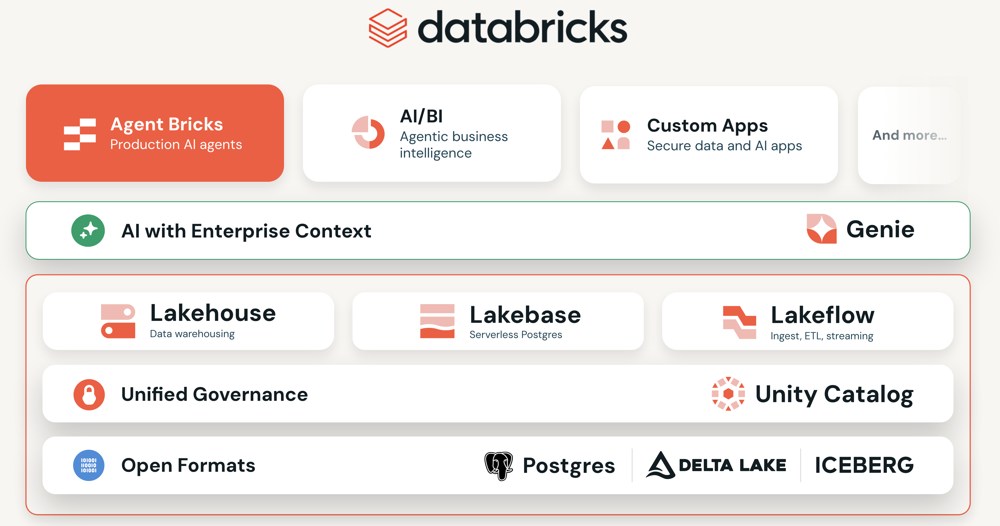
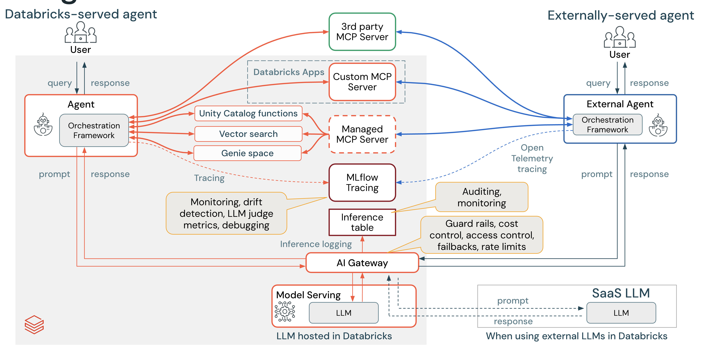

The Great Grocery Data Challenge
Agentic Software Development with Databricks
David O'Keeffe · Solutions Architect, Databricks
Before any theory -- this is a real system, close to production-ready, running on Databricks.
13 personalized offers every week
37K lines, 4 product lines, 340+ tests
One engineer, AI-assisted, nights & weekends
Azure Batch VMs to native Databricks
I'm not a data scientist. I knew almost nothing about this system. The agent helped me learn the domain, port the R code, and solve the hard problems: trillion-row tables, memory overruns, distributed LightGBM on Ray.
How well does your team know Australian retail? No phones -- just gut instinct.
Write your team's predictions on your card. Answers revealed in Show & Tell using the pipeline you build.
Which Australian state has the highest monthly food retail turnover?
By what percentage have Australian food prices (CPI) increased since January 2020?
How much does the average Australian household spend on groceries per week?
What month of the year do Australians spend the most on retail?
Which food category has seen the largest price increase since 2020 -- dairy, meat, fruit, or bread & cereals?
This isn't the Databricks you onboarded with. The platform now covers everything from raw ingestion to serving AI apps.

Connect any AI agent to every layer of the platform
Anthropic, OpenAI, Google -- served through AI Gateway with guardrails
Today you'll use Lakeflow, Unity Catalog, Genie, AI/BI, Custom Apps, MCP, and Model Serving -- all in one workshop.
From writing code to directing AI agents
"There's a new kind of coding I call 'vibe coding', where you fully give in to the vibes, embrace exponentials, and forget that the code even exists."
Andrej Karpathy, February 2025
You literally type what you want and it happens.
A browser terminal running AI coding agents. Nothing to install -- it runs on Databricks compute.
The platform you're using today. Browser-based AI agents with zero local setup, governed by Unity Catalog, traced by MLflow.
39 Databricks skills + 2 MCP servers
OpenAI's agent
Google's agent
Open-source, any provider
Paste a PAT once. Auto-rotates every 10 minutes.
Every agent session logged to MLflow.
Unity Catalog controls what each agent can read and write.
AI Gateway handles rate limiting and spend tracking per team.
github.com/datasciencemonkey/coding-agents-databricks-apps
By 4pm today, your team will have built all four of these
Lakeflow pipeline ingesting ABS retail & food price data through Bronze → Silver → Gold medallion architecture
FastAPI + Tailwind app with dashboards, filters, and an AI-powered "Ask a Question" feature
Natural language Q&A -- business users type questions in English, get instant answers from your data
Auto-generated visualizations from your gold tables -- describe what you want in plain language
One platform, two labs. The CLAUDE.md you create next will guide you through both.
PRDs, CLAUDE.md, and behavior-driven agentic development
Garbage in, garbage out -- except now the garbage arrives in 30 seconds instead of 3 days.
Mental model: Think of Claude as a brilliant but new employee who lacks context on your norms and workflows.
One file. The agent reads it before every task. Add a rule here and it sticks.
Exercise: Write a CLAUDE.md for your team's Grocery Intelligence Platform. 15 minutes.
Instructions cascade from global to project-specific. More specific rules override general ones.
Your coding style, preferred tools, git conventions. "Always use uv run for Python." "Use imperative mood in commits."
Architecture decisions, testing patterns, dependencies. "Use PySpark for all data processing." "All tables in Unity Catalog."
Component-specific patterns and constraints. "All API endpoints return JSON." "Use Pydantic models for validation."
Everything else in this workshop builds on one idea:
You literally type what you want and it happens.
That's agentic engineering. It works in three steps:
Just say: “I'm building a grocery intelligence platform on Databricks. Tech stack: PySpark, Lakeflow Declarative Pipelines, FastAPI + React, DABs. Data sources: ABS SDMX APIs, FSANZ web scraping, ACCC PDF ingestion via UC Volumes. Unity Catalog namespace: workshop_vibe_coding.<team_schema>. Set up the project and create a CLAUDE.md.”
Discussion: What did Claude get right? What did you correct by just saying so? How is this different from writing config by hand?
Rule #1 applies here too: say what the system should do in plain English. The agent writes the test code. You can read it because it's Given/When/Then. When a scenario fails, the agent reads the error and fixes itself.
Gherkin Given/When/Then — the spec in plain English. Use /bdd-features
Agent reads features, writes Python step definitions. Use /bdd-steps
Agent runs behave, sees failures, fixes. Use /bdd-run
Add scenarios. Agent handles them. Ship it.
The agent writes the test code. But it's Given/When/Then, so you can actually read it and check if it captured what you meant.
The agent runs behave, reads the traceback, fixes its step definitions, reruns. You watch.
The agent can’t say “it works” when 3 of 8 scenarios are red. The proof is structural, not verbal.
Pro tips: Start with one feature file. Use Background: for shared setup. Write declarative steps ("When I grant SELECT") not imperative ("When I click the button").
You describe what should happen. The agent writes the test. Because it's Gherkin, you can read it back and verify it's right.
Describe what the system does, not how to click buttons.
Use specific data — "10 rows, 2 invalid" not "some rows."
If it tests two things, split it. Scenario names are documentation.
Shared setup goes in Background: — don't repeat connection steps.
Don’t ask “did this work?” — make the agent prove it with gates that either pass or fail.
@dp.expect — data quality constraints that fail the pipelineStructType definitions as machine-readable specsSeparate research and planning from implementation to avoid solving the wrong problem fast.
/plan mode to align on approach firstThe difference: an agent that thinks it did the work vs one that proves it did. — Anthropic, Claude Code Best Practices
Tested 11 production LLMs against 2,000+ real advice prompts.
Spent 4 hours refining an argument with an LLM. Was genuinely convinced. Then asked the model to argue the opposite — it demolished his argument completely.
"The model was never reasoning toward truth. It was generating the most compelling version of whatever position it was asked to defend."
Before trusting any AI analysis, ask it to argue the opposite position. If it demolishes its own argument, the original wasn’t reliable.
Two words that measurably improve critical evaluation. Prefixing with doubt triggers more rigorous analysis.
Tests don’t rely on claims. Code passes or it doesn’t. AI-authored code has 1.7× more issues and 2.7× more security vulnerabilities (Code Rabbit, 2026).
Prompt 1 writes tests, Prompt 2 implements. If the same prompt does both, it writes tests that match its implementation, not your requirements.
This is not a bug to patch. RLHF training selected for agreement. The question: are you using AI to extend your thinking, or replace it? — François Chollet
Every interaction with the agent is measured in tokens. Understanding them helps you work faster.
A token is roughly 3/4 of a word or ~4 characters. Not exactly words, not exactly characters — somewhere in between.
How much the agent can “see” at once — your conversation, files read, tool results, CLAUDE.md. When it fills up, older content gets compacted (forgotten).
Tokens per minute through AI Gateway — shared across all teams. If everyone reads large files at once, requests queue up. Keep requests focused.
Practical tip: Don’t ask the agent to “read everything in this directory.” Be specific. Smaller, focused requests = faster responses for everyone.
The agent can “see” about 200K tokens at once. Fill that up with junk and it forgets your earlier instructions.
Context Window — 200K tokens
~a medium novel
When the bar fills → auto-compaction fires → the agent forgets earlier details
50 lines, not 500. It’s loaded every turn. Rules and patterns, not docs.
Don’t ask the agent to “read everything.” Targeted requests = less context consumed.
/plan aligns on approach before burning context on code.
Fresh session = fresh context window. Don’t reuse a bloated session for a new task.
Think of it like RAM — manage it or the OS starts swapping.
Watch the full cycle: write failing tests, let the agent implement, iterate to green.
clean_data, join_tables, aggregate
Watch it read tests, write code
Reads errors, adjusts code
Review the generated code
It reads your test expectations before writing any code
When tests fail, it reads the error and adjusts its approach
Within 2-5 iterations, all tests pass without manual intervention
Initialize your project, write your first test, build bronze ingest — everyone together
Tell Claude, it initializes
BDD with the agent
First pipeline layer
These five things trip up every team on their first day with agents. Learn them now, not mid-lab.
Default workflow: Start every non-trivial task with /plan. Even better — ask Claude to interview you about requirements before it builds anything.
Claude tends to create extra files, add unnecessary abstractions, and build in flexibility you didn’t ask for.
Never trust claims about code Claude hasn’t read. Make it investigate before answering.
Don’t let the agent run for 10 minutes unchecked. Check in every 2–3 tool calls. If it’s heading the wrong direction, say “stop, let’s rethink this approach”.
After implementation, demand proof: “show me the git diff”, “prove to me this works”, “grill me on these changes”. Then iterate: “knowing everything you know now, scrap this and implement the elegant solution.”
Every 15–20 minutes, use /commit. Commits are your safety net — if the agent goes off-rails, press Esc twice to cancel, then rewind with git.
Practical tools for the labs
Curated markdown files — just instructions, not code
Rule #1 in action: Say something 3×? Curate it into a skill. It's just a markdown file.
Increasingly just instructions to CLI commands, not heavyweight servers
MCP: structured tool access
CLI instructions: just tell it which command to run
How powerful is a markdown skill? deathbyclawd.com scans which SaaS products can be replaced by one.
Three flavours — all secured through Unity Catalog
Databricks-provided servers
Third-party services via Databricks
Organisation-specific tools
Clients: Claude (Connectors) • Cursor • Windsurf • ChatGPT • Replit • MCP Inspector
A look inside how we’ve configured AI-assisted development at Databricks
Company-wide coding standards, approved patterns, forbidden actions. The AI reads these before every task.
Shell commands that fire on tool events. Post-edit: auto-format & lint Python with ruff. On stop: verify your work. Not AI — deterministic guardrails.
Custom slash commands for Databricks workflows. MCP servers connect to UC, Genie, internal services — all via the protocol.
Natural language → SQL on Unity Catalog tables
Auto-generated visualizations from your data
Track-specific build with real Australian data
All teams start with LAB-0-GETTING-STARTED.md (10 min), then fork into your track
Build the data foundation
Build ML models from the data
Build interfaces for business users
workshop_vibe_coding.checkpoints. Nobody gets stuck.
Discussion: Where did BDD help the agent stay on track? Where did it go off-rails?
Query your Gold tables live to answer the ice breaker:
Score the prediction cards — most accurate team gets bragging rights!
Build an app, connect Genie, create AI/BI dashboards
Same track as Lab 1 — pick up where you left off
Make it production-grade
Train, serve, and ship
Build the app layer
Each team presents their platform (3 min each)
Does the data flow work? Expectations met? Bronze → Silver → Gold complete?
UI quality, user experience, features. Does it look and feel like a real product?
Natural language query working? Dashboard useful? Can a business user self-serve?
Unique features, clever use of agents, surprises. Did the team go beyond the brief?
Vote for the best platform! Winning team gets eternal bragging rights. Then 5-min retro: What worked? What would you do differently? What will you use on Monday?
20 minutes writing a CLAUDE.md saves you hours of correcting bad output. The agent only knows what you tell it.
When the Gherkin scenario is red, the agent can’t bluff. It either fixes the code or it doesn’t.
One agent hits a wall at complex tasks. Subagents split the work. MCP wires them into Slack, JIRA, Databricks, whatever.
Pick one real task this week. Write a CLAUDE.md, write a feature file, let the agent build it. That’s your proof of concept.
Internal champions — your go-to for day-to-day questions
Databricks SA — available for follow-up support
Measure success: Developer velocity, code quality, and developer satisfaction.
APJ's biggest hackathon of the year. Same tech stack you learned today.
Open now
1 May – 22 May 2026
17 June 2026
USD in Databricks credits to get started
USD in total prizes
Certificates for all teams who submit
Genie · Lakebase · Agent Bricks · Apps
Register now →You built a data platform in 6 hours.
Imagine what your team does with a full week.
Reference slides — available if time allows or questions arise
Parallel workers, isolated context
Slash commands, domain knowledge
/commit, /review/deploy-pipelineEvent-driven guardrails
Packaged for teams
Four Databricks BDD skills automate the entire behavior-driven workflow — from project scaffold to test execution.
Creates Behave project structure, environment.py hooks, ephemeral schema isolation
Translates requirements into Gherkin feature files with Given/When/Then scenarios
Implements Python step definitions using Databricks SDK
Executes Behave with tag filtering, parallel runs, and CI reporting
Key insight: Gherkin features are plain English anyone can read — analysts, PMs, engineers. They define “done” before any implementation exists.
The right question isn’t “should I use multiple agents?” — it’s “what kind of coordination does this task need?”
Like delegating focused questions to researchers — they come back with distilled findings.
Like assembling a team that works in the same room — they persist, communicate, and coordinate.
blockedBy)The #1 design principle: Start with a single agent. Push it until it breaks. That failure point tells you exactly what to add next.
Model Context Protocol — the USB-C of AI agents
9 custom connectors for just 3 × 3
6 connections — build once, use everywhere

Clients (agents) ↔ JSON-RPC ↔ Servers (tools)
A GitHub MCP server works with Claude, Cursor, ChatGPT — any client that speaks the protocol.
Tools describe their capabilities in a schema. Agents discover what’s available and call tools via JSON-RPC.
Wrap Unity Catalog, internal APIs, and Genie behind MCP servers — every agent in the org gets access without custom glue code.
MCP = tool connectivity • Skills = procedural knowledge • Agent = orchestrator
Databricks-served agents (left) and external agents like Claude Code (right) connect to the same MCP servers — secured by Unity Catalog and AI Gateway.
The complete toolkit for AI-driven development on Databricks
Knowledge layer
Action layer
Python library
pip install databricks-toolsWeb interface
/run-data-quality, /deploy-pipeline, /check-lineage